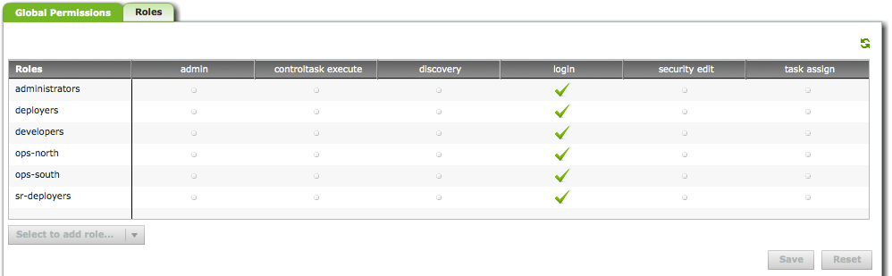
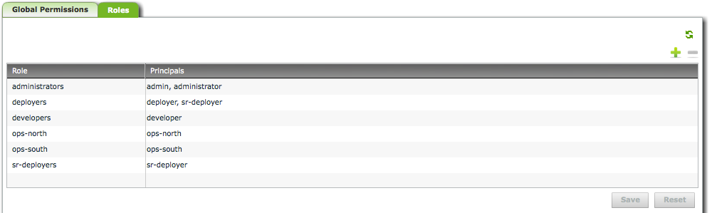

The Admin Screen is used to maintain security roles and global permissions in Deployit. For more information about Deployit security, see the Reference Manual and System Administration Manual.
The global permissions tab is used to assign global permissions to roles. The following screenshot shows an example of the global permissions tab:

The table displays, for each role, which global permissions are assigned to it. If a permission is assigned to the role, a check mark is shown. If the permission is not assigned, a dot is shown.
To add a role and assign permissions to it, select it from the dropdown list in the bottom-left corner of the table. Click on a dot or check mark to assign or unassign the permission to the role.
Note that changes made to the global permissions table are not stored until you press the Save button.
The screen contains the following buttons:
The roles tab is used to create and maintain roles in Deployit. The following screenshot shows an example of the roles tab:

The table displays, for each role, which principals are a member of the role.
To create a role, click the plus sign on the top-right corner of the table. A new role is added to the table. Enter a role name and press the Tab key to move to the principals field. Enter all principals that are a member of the role, separated by commas.
To remove a role, select it in the table and press the minus sign on the top-right corner of the table.
To rename a role, double-click on the role name, type the new role name and press the Save button.
To edit a role, double-click the principal list, edit the list and press the Save button.
Note that changes made to the role table are not stored until you press the Save button.
The screen contains the following buttons: